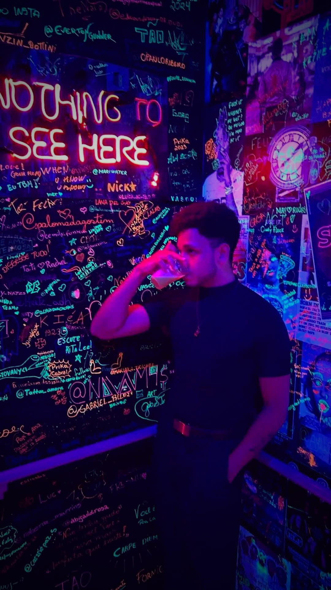
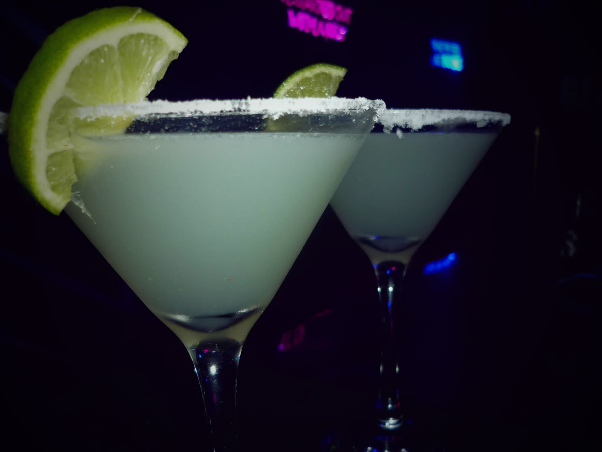

Música ao vivo
Rock, pop e clássicos que todo mundo canta junto, com som de qualidade e palco perto do público.
Ver agenda →Rua Coberta · Criciúma
O bar da Rua Coberta de Criciúma.
Conheça o bar Ver agenda
Toda semana
Bandas e artistas da região no palco toda semana.
Ver agenda
Da casa
Carta de drinks autorais, chopp gelado e porções para dividir.
Ver cardápioA casa
Três motivos para a sua próxima noite ser aqui.
Rock, pop e clássicos que todo mundo canta junto, com som de qualidade e palco perto do público.
Ver agenda →Receitas criadas pela casa, além dos clássicos de sempre e chopp tirado na hora.
Ver cardápio →Espaço para a turma inteira curtir junto, de aniversários a confraternizações.
Como chegar →